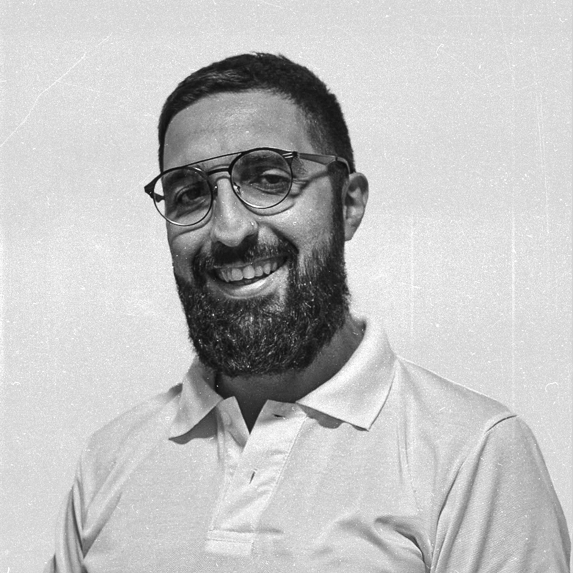
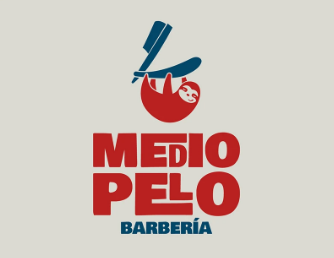
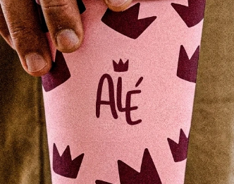
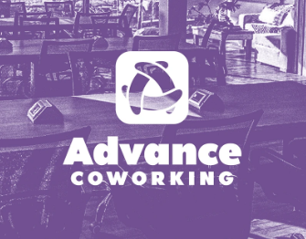
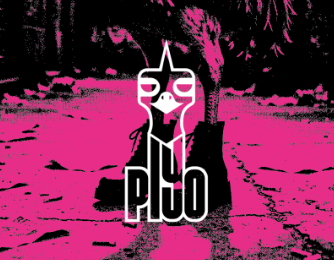

Damián Otero | Diseñador Gráfico
15 años creando identidades, comunicación visual y piezas gráficas desde el concepto hasta la producción final.
-
Ver portfolio
Descargar
CV
Diseño con una mirada integral
Soy Diseñador Gráfico con 15 años de experiencia en comunicación visual, branding, diseño editorial y producción gráfica. Me especializo en desarrollar identidades visuales, materiales institucionales, contenido para redes sociales y piezas impresas para organizaciones, empresas y proyectos educativos. Mi experiencia abarca todo el proceso de diseño, desde el concepto y desarrollo visual hasta la producción final, combinando criterio creativo con conocimiento técnico y herramientas de IA para optimizar procesos y mantener la consistencia de marca.
- 15+ años de experiencia
- 100+ proyectos desarrollados
- 200+ publicaciones e informes
- 20+ identidades visuales
Proyectos destacados
-

Medio Pelo -

Panadería Alé -

Advance Coworking -

Piyo
Experiencia
EDUCACIÓN PARA COMPARTIR | DISEÑADOR GRÁFICO | CDMX - MÉXICO | 04/2022 - 06/2026 (h3)
Desarrollé identidades visuales y materiales de comunicación institucional para programas educativos y campañas de marketing digital. Diseñé informes anuales, manuales, guías y publicaciones editoriales. Produje contenido para redes sociales incluyendo carruseles, infografías, banners, piezas digitales, materiales impresos y motion graphics. Optimicé los tiempos de desarrollo de piezas gráficas mediante la integración de herramientas de IA. Colaboré con equipos interdisciplinarios para desarrollar campañas institucionales y acciones de comunicación. Realicé cobertura fotográfica, edición de contenido audiovisual y motion graphics para eventos, presentaciones y redes sociales.
TGI PACK | ANALISTA DE PRESUPUESTOS Y DESARROLLADOR DE PRODUCTO | BUENOS AIRES - ARGENTINA | 06/2013 - 12/2021
Desarrollé presupuestos y análisis de factibilidad para proyectos de producción gráfica. Trabajé junto a los equipos de diseño y producción en el desarrollo de nuevos productos gráficos. Gestioné la relación con proveedores, negociando costos y especificaciones técnicas para mejorar la eficiencia de producción. Participé en la planificación integral de proyectos gráficos, coordinando procesos entre las áreas de diseño, producción y compras.
IMPRENTA ALL GRAPH | DISEÑADOR GRÁFICO | BUENOS AIRES - ARGENTINA | 11/2010 - 11/2011
Diseñé piezas para impresión offset y producción gráfica. Gestioné el proceso de preprensa y producción. Brindé atención personalizada a clientes, traduciendo necesidades comerciales en soluciones gráficas.
Formación
UNIVERSIDAD NACIONAL DE LANÚS | 3º año — En curso
Licenciatura en Diseño y Comunicación Visual
INSTITUTO MARÍA ANA MOGAS | 2009 — Graduado
Bachiller en Comunicación, Arte y Diseño
Herramientas
- Adobe After Effects · Motion Graphics
- Adobe Illustrator
- Adobe Creative Cloud
- Adobe InDesign
- Adobe Lightroom
- Adobe Photoshop
- Adobe Premiere Pro · Edición de videos
- Canva
- CapCut
- CorelDRAW
- Figma · Diseño de interfaces
- WordPress
- Inglés intermedio
- ChatGPT
- Adobe Firefly
- Gemini
- Claude